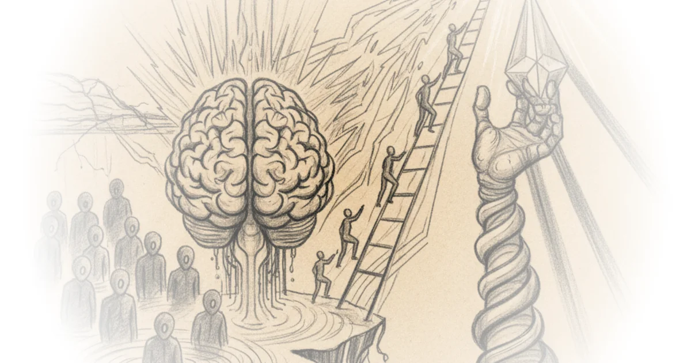

Crosspost: Brian klaas: The great cognitive divide Brad DeLong · DeLong's Grasping Reality ·Jun 30, 2026 · 16 min read · AI & Tech 
Republic of the central banker: Hoisted from the archives Brad DeLong · DeLong's Grasping Reality ·Jun 30, 2026 · 22 min read · Economics
The casual destruction of usaid is, so far, the the administration administration action that has… Brad DeLong · DeLong's Grasping Reality ·Jun 27, 2026 · 13 min read · Foreign Policy
Crosspost: Ben thompson: An interview with om malik about tech’s history & future Brad DeLong · DeLong's Grasping Reality ·Jun 27, 2026 · 48 min read · AI & Tech
The administration's islamabad mou: Surrender on paper, spin on cable Brad DeLong · DeLong's Grasping Reality ·Jun 18, 2026 · 13 min read · Foreign Policy
Reading: Arthur wellesley, duke of wellington: Waterloo dispatch Brad DeLong · DeLong's Grasping Reality ·Jun 17, 2026 · 14 min read · History
Ask not for whom the schumpeterian Creative-Destruction bell tolls this time: Key insight Brad DeLong · DeLong's Grasping Reality ·Jun 15, 2026 · 10 min read · Economics
Would you have bet on the East African plains ape 75000 years ago?: Most important thing Brad DeLong · DeLong's Grasping Reality ·Jun 14, 2026 · 13 min read · Science
Crosspost: Arindrajit dube: A minimum wage natural experiment has been running for over a decade Brad DeLong · DeLong's Grasping Reality ·Jun 11, 2026 · 15 min read · Economics
Crosspost: RENÉE DiRESTA: Red mirage, blue shift, online cope Brad DeLong · DeLong's Grasping Reality ·Jun 10, 2026 · 13 min read · Media Criticism
The public sphere & "civility": Hoisted from the archives Brad DeLong · DeLong's Grasping Reality ·Jun 8, 2026 · 12 min read · Media Criticism
(Very partial) crosspost: Alex heath: SubStack is opening up to AI: Interviewing CEO chris best Brad DeLong · DeLong's Grasping Reality ·Jun 4, 2026 · 16 min read · AI & Tech
Crosspost: Noah smith: How much more software do we really need? Brad DeLong · DeLong's Grasping Reality ·Jun 2, 2026 · 12 min read · AI & Tech
Inference is unlikely to ever be a low marginal cost operational node, & the other reasons why the… Brad DeLong · DeLong's Grasping Reality ·Jun 1, 2026 · 11 min read · AI & Tech
Stochastic parrots on the palatine hill: Monday MAMLMs Brad DeLong · DeLong's Grasping Reality ·Jun 1, 2026 · 11 min read · AI & Tech
Re: The truly abominable kevin hassett: Steve durlauf does the work of the lord: Life in the 2000s Brad DeLong · DeLong's Grasping Reality ·Jun 1, 2026 · 12 min read · Economics
The transformation problem was not something karl marx overlooked! & Other topics: History of… Brad DeLong · DeLong's Grasping Reality ·Jun 1, 2026 · 16 min read · Economics
The current balance in this Pause—Not end, but pause, perhaps perpetual pause—in the war in the… Brad DeLong · DeLong's Grasping Reality ·May 30, 2026 · 11 min read · Foreign Policy
"Agentic AI" is a bonfire of the tokens while fab capacity, power grids, and P&Ls are the brakes:… Brad DeLong · DeLong's Grasping Reality ·May 29, 2026 · 15 min read · AI & Tech
Reading: Joan robinson: An open letter from a keynesian to a marxist Brad DeLong · DeLong's Grasping Reality ·May 25, 2026 · 13 min read · Economics
Big trouble in little human genetic Diffence-Worshipper land Brad DeLong · DeLong's Grasping Reality ·May 24, 2026 · 10 min read · Science
Crosspost: Nate silver: Disney erased FiveThirtyEight Brad DeLong · DeLong's Grasping Reality ·May 21, 2026 · 31 min read · Media
Digital gods, cardboard brains, & the coming AI bust: Going around robin hood's barn to get to the… Brad DeLong · DeLong's Grasping Reality ·May 19, 2026 · 15 min read · AI & Tech
Well! I am finally optimistic about the SubTuringBradBot project!: Monday MAMLMs Brad DeLong · DeLong's Grasping Reality ·May 17, 2026 · 10 min read · AI & Tech
Crosspost: Ilari mäkelä, steven broadberry, & bishnupriya gupta: The big picture: Measuring the… Brad DeLong · DeLong's Grasping Reality ·May 15, 2026 · 13 min read · Economics
Anthology Super-Intelligence: Thursday economic history Brad DeLong · DeLong's Grasping Reality ·May 13, 2026 · 52 min read · Science
Hoisted from the archives: Do birds do it much better? (Intelligence, that is), & other topics… Brad DeLong · DeLong's Grasping Reality ·May 5, 2026 · 16 min read · Science
Draft: Social theory for the mid-21st century Brad DeLong · DeLong's Grasping Reality ·May 3, 2026 · 30 min read · Philosophy
A comment on noah smith's "the moderately easy problem of consciousness" Brad DeLong · DeLong's Grasping Reality ·Apr 27, 2026 · 12 min read · Philosophy
Not my john hicks lecture: "John (hicks) the apostate" Brad DeLong · DeLong's Grasping Reality ·Apr 25, 2026 · 13 min read · Economics